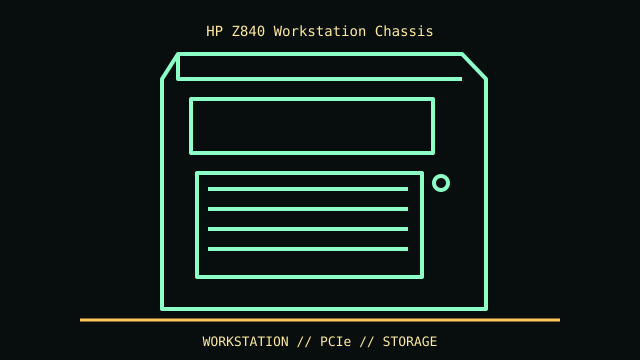

[ IDENTIFIED ENCLOSURE // HP Z840 DUAL-SOCKET WORKSTATION (QUICKSPECS C04400011) ]
HP Z840 Workstation Chassis
444 × 203 × 520 mm (H × W × D), rackable minitower. Check workstation orientation and rack kit; the case is not a standard desktop tower blank.

REVISION / FIT CAVEAT: Z840 differs from Z820/Z8 G4 and later Z8 G5. Product number, CPU/PSU options and QuickSpecs revision identify the cooling and slot configuration.
Model-specific mechanical record
| Catalog leaf | Professional workstation enclosures |
|---|---|
| Identity / generation | HP Z840 dual-socket workstation (QuickSpecs c04400011) |
| Dimensions / clearance | 444 × 203 × 520 mm (H × W × D), rackable minitower. Check workstation orientation and rack kit; the case is not a standard desktop tower blank. |
| Drive bays / mounts | Two external 5.25-inch bays, four internal 3.5-inch positions and one slimline optical position in the published layout; options can replace bay hardware. |
| Board / chassis compatibility | HP-specific dual-socket board, PSU, airflow shroud and tool-less retention. PCIe card support depends on risers, CPU population and PSU; do not assume ATX tray compatibility. |
| Revision identification | Z840 differs from Z820/Z8 G4 and later Z8 G5. Product number, CPU/PSU options and QuickSpecs revision identify the cooling and slot configuration. |
Compatibility and preservation
HP-specific dual-socket board, PSU, airflow shroud and tool-less retention. PCIe card support depends on risers, CPU population and PSU; do not assume ATX tray compatibility.
Keep the airflow guide, fan modules, memory cooling parts and tool-less retention arms. Disconnect AC and follow HP service procedure before removing PSU or board.
Before transfer or restoration, photograph the complete model label, assembly/board revisions, bay/backplane identifiers and included accessories. Measure the actual specimen when planning installation or shipping; nominal envelope figures may exclude protruding feet, rails, doors or cables.
Manufacturer manuals and archival sources
- HP Z840 Workstation manuals — HP SupportModel-specific manufacturer specification, service manual, or technical reference used for the listed dimensions and mechanical configuration.
- HP Z840 QuickSpecs/specifications — HP SupportSupplemental model documentation or institutional/technical archival record; use the exact product code and manual revision for a specimen.
Listings distinguish base configuration from optional drive, PSU, fan, rack and accessory kits. Do not combine maximum capacities if cages or components occupy the same volume.